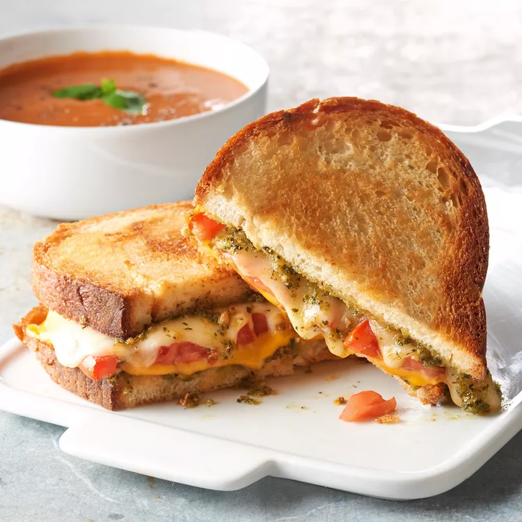

Pesto Grilled Cheese Sandwich

Description
Delicious, fatty cheese bread for the morning
Ingredients
- 1 tablespoon softened butter, divided
- 2 slices Italian bread
- 1 tablespoon prepared pesto sauce, divided
- 2 slices tomato
- 1 slice American cheese
Steps
- Spread butter on one side of a slice of bread and place it, buttered side down, into a nonstick skillet over medium heat.
- Spread 1/2 of the pesto sauce on the unbuttered side of the bread. Stack provolone cheese, tomato, and American cheese on top of pesto, in that order.
- Spread remaining pesto sauce on second slice of bread. Place it pesto side down onto sandwich in the pan. Butter the top side of bread.
- Gently fry sandwich, flipping once, until both sides are golden brown and cheese has melted, about 5 minutes per side.
Main Page